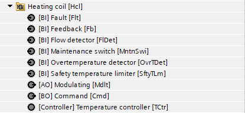
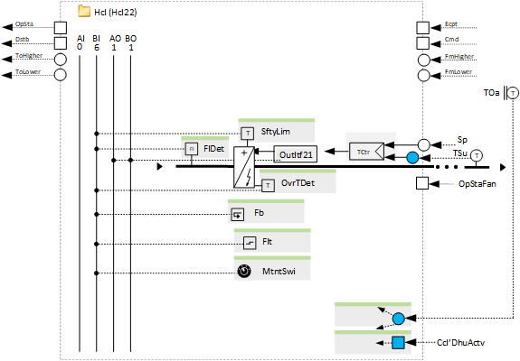
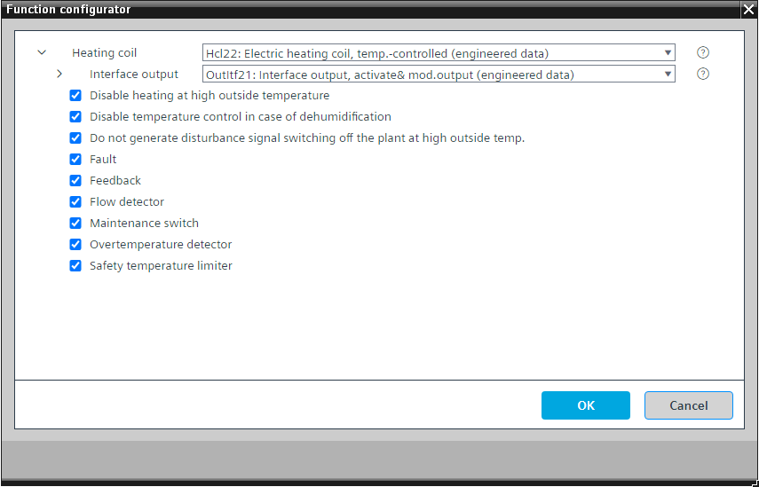

[Hcl22] 电加热线圈，温控
Program block, name / node subtype: [Hcl22] Electric heating coil, temperature-controlled
Library hierarchy: Ventilation and air conditioning equipment
Family: Hcl
项目树 | 图表 |
|---|---|
|
 |  |
Configurator


程序块存储在没有 I/Os. 的库中 使用auto-create and auto-connect函数创建 I/Os 和 /or 将它们连接到接口块，例如 R_A、CMD_B。或者，从包含库中预定义 I/Os 的文件夹中取出 I/Os，并从工厂中取出 /or，并将它们连接到接口块。
通过调制电加热器 (OutItf21) 的输出信号来控制送风温度（加热）。
或者，可以将不同阶段的请求发送到电加热线圈 (OutItf22)。
该加热盘管很可能用于空气处理机组。 CMDSEQ_B 具有用于 1 秒加热线圈位置关闭序列的设置（反馈或超时）（针对热水加热线圈进行了优化）。如果是电加热线圈，请将其设置为长于加热线圈工作状态延迟关闭时间的值。
对于用于操作状态的信号存在延迟关闭时间，例如1分钟，在加热线圈变得不活动之后将其值保持为“真”。如果在空气处理机组设备中使用（最有可能是这种情况），则加热线圈的运行状态由 CMDSEQ_B 读取。如果设备即将关闭并且加热盘管处于活动状态，则设备会运行一段时间，同时关闭加热盘管以排出热量。关闭期间，CMDSEQ_B 在此延迟期间接收操作状态“True”，并等待关闭。这有助于干燥线圈。
该程序块具有以下可选功能：
Option: Disable heating at high outside temperature
高于特定外部气温（例如高于 18 °C）时将禁用加热。
如果该盘管用作再热器，请删除此选项。
Option: Disable temperature control in case of dehumidification
提供一个接口（最有可能是冷却盘管）和逻辑，以在除湿时禁用温度控制，以便在冷却盘管执行除湿时不预热空气。
如果该盘管用作再热器，请删除此选项。
Option: Do not generate disturbance signal switching off the plant at high outside temperature
为了提高空气处理机组在室外温度较高时的可用性，禁用了关闭设备的干扰信号的生成，并且设备在加热盘管发出警报时继续运行。
Option: Fault (1xBI)
读取故障触点并生成警报。
Option: Feedback (1xBI)
读取反馈信号，如果线圈必须运行时反馈丢失，则生成警报。
Option: Flow detector (1xBI)
读取来自流量检测器的信号并释放输出接口和控制。
Option: Maintenance switch (1xBI)
读取维护开关的信号并产生警报。如果有效，输出将以非常高的优先级（优先级 2）停止。
Option: Overtemperature detector (1xBI)
读取来自过热检测器的信号并生成警报。程序逻辑停止温度控制。
Option: Safety temperature limiter (1xBI)
读取安全温度限制器的信号并生成警报。程序逻辑停止温度控制。
姓名 | 描述 | 类型 | 报警/通知类 | 趋势/类型 |
|---|---|---|---|---|
TCtr | Temperature controller | Ctr: Controller | N/A | N/A |
OutItf | Interface output | N/A | N/A |
姓名 | 描述 | 类型 | 报警/通知类 | 趋势/类型 |
|---|---|---|---|---|
Flt | Fault | BI：二进制输入 | Yes, 4/5 | No |
MntnSwi | Maintenance switch | BI：二进制输入 | 是的，5 | No |
Fb | Feedback | BI：二进制输入 | 是的，4 | No |
OvrTDet | Overtemperature detector | BI：二进制输入 | 是的，4 | 是的，4 |
SftyTLm | Safety temperature limiter | BI：二进制输入 | 是的，5 | No |
FlDet | Flow detector | BI：二进制输入 | No | No |
描述 |
|---|
Disable heating at high outside temperature |
Disable temperature control in case of dehumidification |
仅在外部温度较高时才生成关闭设备的干扰信号。 |
该模块需要一个正在运行的风扇（有一个输入引脚用于连接供应风扇的运行状态）或来自流量检测器的信号。